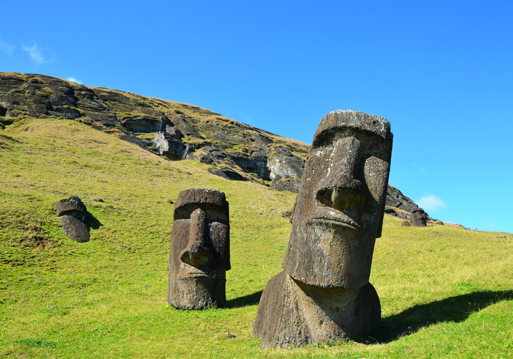
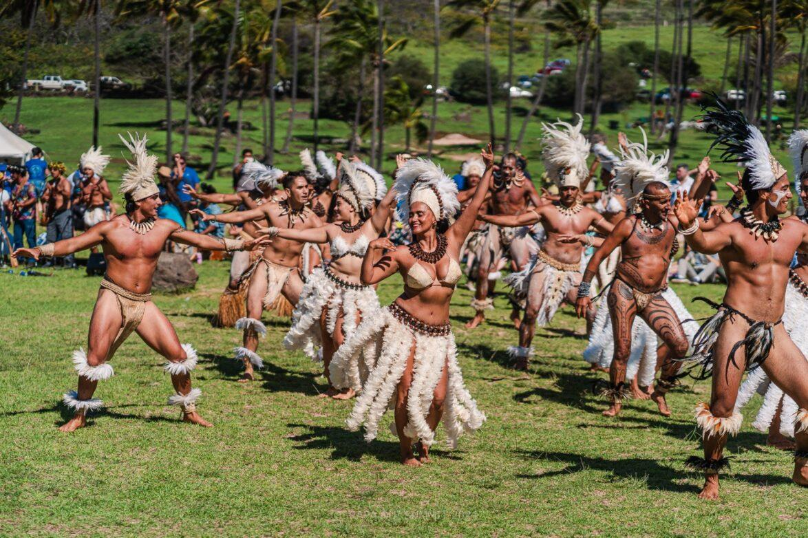

Geografi
Påskön är tämligen trekantig eftersom den bildats av tre underjordiska vulkaner som nått över havsytan.
Den norra, Terevaka (507 m ö.h.) utgör merparten, medan Poike och Rano Kau utgör den östliga respektive
sydliga delen. Flera vulkaniska kratrar finns på ön, och vissa är vattenfyllda. De senaste
lavaströmmarna kan vara yngre än tvåtusen år gamla. På senare tid har mycket få tecken av vulkanisk
aktivitet observerats. Ön består av kala stenslätter och lite vegetation. Den är 163,6 km² stor och som
längst 30 km lång. Utanför dess sydspets ligger tre små öar vid namn Motu Nui, Motu Iti och Motu Kao
Kao. Den högsta punkten på ön är Terevaka som når 507 meter över havet.
Påskön tillhör en undervattenbergskedja, Sala y Gómez Ridge, som reser sig mer än 2 000 meter över
havsbotten. Berggrunden består av hawaiit och järnrik basalt.
Närmaste landområde är den lilla ön Sala y Gomez som ligger 400 kilometer österut, medan närmaste
befolkade landområde är Pitcairnöarna 2 075 kilometer västerut.
Påskön ligger på nazcaplattan och förflyttar sig en meter per år mot öst.
Källa: Wikipedia Påskön
Moai - Statyerna
Moai (singular och plural) är stenstatyer på Påskön. De flesta statyerna är huggna i ett stycke och
runt en tiondel har lösa huvudbonader (pukauer). Det finns mer än 1 000 kända moai fördelade över hela
ön. Vid Rano Raraku, där de flesta moai höggs ut ur klippan, finns det nästan 400 mer eller mindre
färdiga statyer kvar. Stenbrottet verkar ha övergivits i en hast, eftersom det finns flera halvfärdiga
statyer kvar i klippan. I princip alla utställda moai vältes senare av de infödda öborna, troligen genom
inbördes strider mellan klaner.
Statyerna avbildas oftast från yttre brottet av Rano Raraku där de flesta står till axlarna, och mer,
ner i marken. De har tagits loss från berget och kanats ner i en grop till upprätt ställning för att
färdighuggas. Gropen har sedan eroderat igen under åren.
Vad syftet med statyerna var är inte helt känt och det finns många teorier. Den vanligaste är att de
höggs ut av Påsköns befolkning för 1 000 år sedan eller ännu tidigare. Teorier från 2010 hävdar att ön
befolkades tidigast i slutet av 1100-talet. De förmodas representera döda förfäder eller anhöriga, och
märkte ut gravplatser för dessa där de stod på en plattform, vanligen vid kusten. I vilket fall måste de
varit kostsamma att framställa; inte bara är arbetet att hugga ut varje staty något som borde tagit
åratal, utan statyerna måste dessutom släpas tvärs över ön från stenbrottet till platsen där de ställdes
upp. Exakt hur statyerna förflyttades är inte känt, men förmodligen användes slädar av trä eller rullar.
Det antas felaktigt att den mängd trä som krävdes för transport och resning orsakade att ön helt
skövlades på träd. Detta skulle i så fall förklara varför stenbrotten helt plötsligt övergavs. Troligt
är att träden (en stor palm, numera utdöd) redan var i utdöende och inte fortsatte att växa på ön.
Gamla ölegender berättar om en klanhövding på jakt efter ett nytt hem. Platsen han stannade på kallas
idag Påskön. När han dog delades ön upp mellan hans söner. Två söner som hamnade i luven med varandra.
När en hövding för en av dessa klaner dog placerades en moai på hövdingens grav. Öborna trodde att
statyn skulle hålla kvar hövdingens "mana" (övernaturliga krafter). Genom att manan hölls kvar på ön så
trodde öborna att goda tider stundade, regn skulle falla och skördarna skulle bli goda. Den här legenden
kan ha blivit förvrängd från den ursprungliga eftersom den har funnits så lång tid. Saker kan ha blivit
tillagda för att piffa upp och göra den mer intressant.

Moai statyer på Rapa Nui
Källa: Wikipedia Moai
Demografi
År 2002 bodde det 3 791 människor på ön, en ökning från 1 936 invånare år 1982. Den kraftiga
befolkningsökningen beror främst på inflyttning av personer med europeisk härkomst från Chile. Ön har
därmed mist mycket av sin polynesiska identitet. År 1982 bestod ungefär 70 procent av befolkningen av
rapa nui-folk (den lokala folkgruppen). År 2002 har andelen rapa nui-folk minskat till 60 procent.
Chilenarna med europeisk härkomst utgör 39 procent av befolkningen. Den resterande procenten är infödda
latinamerikaner från Chile. 3 304 av invånarna bor i staden Hanga Roa.
Antalet invånare var 2023 ungefär 8 700.
Många infödda har flyttat ifrån Påskön. År 2002 bodde 2 269 av dessa på Påskön, medan 2 378 bodde i
Chile, ungefär hälften i Santiago. Befolkningstätheten på ön är 23 invånare per kvadratkilometer. År
1877 var antalet invånare drygt hundra efter bland annat en evakuering till slavarbete i Peru.
Återvändande från Mangareva och Tahiti höjde sedan antalet.
I mars 2018 röstade kongressen för att man ska begränsa antalet turister och fastlänningar på ön samt
minska tiden de får stanna där.

Urinvånare på Påskön i traditionell utstyrsel
Källa: Wikipedia Påskön